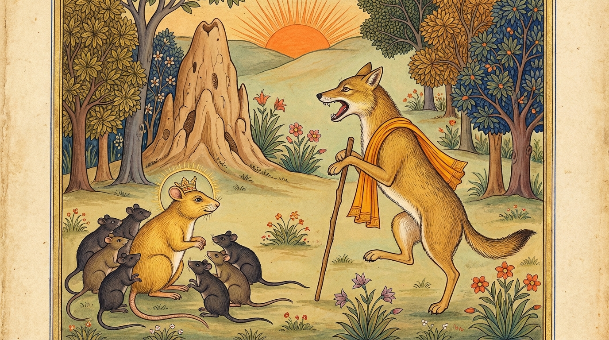

8. බිළාරවත ජාතකය (128)
“යො වෙ ධම්මං ධජං කත්වා” (යමෙක් ධර්මය කොඩියක් කරගන්නේ ද) යනාදී වශයෙන් එන මේ ධර්ම දේශනාව බුදුරජාණන් වහන්සේ ජේතවනාරාමයේ වැඩ වසන සමයෙහි එක්තරා කුහක (නැති ගුණ පෙන්වන) භික්ෂුවක් අරබයා වදාළ සේක. එකල බුදුරජාණන් වහන්සේට ඒ භික්ෂුවගේ කුහක බව සැල කළ කල්හි, “මහණෙනි, මොහු කුහක වූයේ දැන් පමණක් නොවේ, පෙරත් මොහු කුහකයෙකි” යි වදාරා අතීත කතාව ගෙනහැර දැක්වූ සේක.
පෙර බරණැස් නුවර බ්රහ්මදත්ත රජු රාජ්ය කරන සමයෙහි බෝධිසත්වයෝ මී යෝනියෙහි උපත ලබා, වැඩුණු ශරීර ඇති ව, ඌරු පැටවෙකු පමණ වී, නොයෙක් සිය ගණන් මීයන් පිරිවරාගෙන වනයෙහි වාසය කළහ. ඉක්බිති එක් හිවලෙක් ඔබමොබ ඇවිදින්නේ ඒ මී රැළ දැක, “මේ මීයන් රවටා කන්නෙමි” යි සිතා, මීයන් වසන ගුලට නුදුරින් හිරුට මුහුණ ලා වාතය බොමින් තනි කකුලෙන් සිට ගත්තේ ය. බෝසත්හු ගොදුරු සොයා ඇවිදින්නාහු ඌ දැක, “මොහු සිල්වතෙක් වන්නේ ය” යි සිතා ඌ ළඟට ගොස්, “ස්වාමීනි, ඔබගේ නම කුමක් ද?” යි විමසූහ. “මම ‘ධම්මික’ වෙමි” යි හෙතෙම කී ය. “පා හතර ම බිම නො තබා කුමක් නිසා එක කකුලකින් සිටින්නෙහි ද?” යි ඇසූ විට, “මගේ පා හතර ම පොළොවේ තැබුවහොත් පොළොවට මා දරා සිටිය නො හැකි ය. එබැවින් තනි කකුලෙන් සිටිමි” යි පිළිතුරු දුන්නේ ය. “කට ඇරගෙන කුමක් නිසා සිටින්නෙහි ද?” යි ඇසූ විට, “අපි අන් කිසිවක් අනුභව නො කරමු, හුළඟ පමණක් අනුභව කරමු” යි කී ය. “එසේ නම් හිරුට මුහුණ ලා සිටින්නේ කුමක් නිසා ද?” යි ඇසූ විට, “සූර්යයා වඳින්නෙමි” යි කී ය. බෝසත්හු ඔහුගේ වචන අසා, “මේ තෙමේ සිල්වතෙක් වන්නේ ය” යි සිතා එතැන් පටන් මී සමූහයා සමඟ උදේ හවස ඔහුට උපස්ථාන කිරීමට යති.

හිවලා මීයන් උපස්ථාන කොට ආපසු යන විට, සියල්ලන්ට පසුව යන මීයා අල්ලා මස් කා, ගිල දමා, කට පිස දාගෙන සිටියි. අනුක්රමයෙන් මී සමූහයා අඩු විය. මීයෝ, “පෙර අපට මේ වාසස්ථානය ඉඩ මදි විය, ප්රමාණවත් නො වීය. අප එකිනෙකා ගැටෙමින් සිටියෙමු. දැන් මෙය ඉඩකඩ ඇතුව පවතී. මේ වාසස්ථානය පෙර මෙන් නො පිරෙයි. මේ කුමක් නිසා ද?” යි බෝසතුන්ට ඒ පුවත සැලකළහ. බෝසත්හු, “කුමන කාරණයකින් හෝ මීයෝ නැති වී යති” යි සිතන විට, හිවලා ගැන සැක උපන් බැවින් “මොහු ගැන විමසා බලන්නෙමි” යි සිතා, උපස්ථාන කිරීමට යන වේලාවේ සෙසු මීයන් ඉදිරියට යවා තමන් පස්සට විය. හිවලා බෝසතුන්ගේ ඇඟට පැන්නේ ය. බෝසත්හු තමන් අල්ලා ගැනීම පිණිස හිවලා පනින බව දැක, ආපසු හැරී, “එම්බා හිවලා! මේ නුඹේ ව්රත සමාදානය ද? ධර්මයේ සුන්දර ස්වභාවය පෙන්වා ධර්මයෙහි නො පිහිටා, අනුන් ඝාතනය කිරීම පිණිස ධර්මය කොඩියක් කරගෙන හැසිරෙන්නෙහි දැ?” යි පවසා මේ ගාථාව කීහ.
“යමෙක් ඒකාන්තයෙන් (දස කුසල) ධර්මයන් ධජයක් කොට (මතු කොට පෙන්වා), සත්ත්වයන් (ලවා ‘මේ සිල්වතෙකැ’ යි) විශ්වාස ඇති කරවාගෙන, තමන්ගේ සැබෑ ස්වභාවය සඟවා ගෙන පව් සිදු කරයි ද, ඔහුගේ ඒ හැසිරීම ‘බිළාර’ (බළල්) ව්රතය නම් වේ.”
එහි, “යො වෙ” යනු ක්ෂත්රිය ආදී යම් කිසි කෙනෙකි. “ධම්මං ධජං කත්වා” යනු දස කුසල කර්ම පථ ධර්මයන් කොඩියක් මෙන් මතු කොට, එය ඉදිරියට දමාගෙන (තමා ධර්මිෂ්ඨයෙකු ලෙස) දක්වන්නේ ය යන අර්ථයි. “විස්සාසයිත්වා” යනු ‘මේ තෙමේ සිල්වතෙකැ’ යි යන හැඟීමෙන් හටගත් විශ්වාසය ඇති කරවාගෙන ය. “බිළාරං නාම තං වතන්ති” යනු, ඔහු මෙසේ ධර්මය කොඩියක් මෙන් මතු කොට පෙන්වා රහසිගත ව පව් කරන්නේ නම්, එය ඒකාන්තයෙන් ම බළල් ව්රතයක් (කෛරාටික ව්රතයක්) වේ ය යන අර්ථයි.
මී රජතෙම ඒ වචන කියමින් ම උඩ පැන, උගේ බෙල්ලට පැන, යටි හනුවට පහළින් වූ ගලනාලය හපා කා, බොටුව පලා මරණයට පත් කළේ ය. (එවිට) මී සමූහයා ආපසු හැරී අවුත්, හිවලා ව “මුරු මුරු” හඬ නංවමින් කා දැමූහ. පළමුවෙන් පැමිණි අය උගේ මස් ලැබූහ. පසුව පැමිණි අයට මස් නො ලැබුණි. එතැන් පටන් මී සමූහයා බිය නැත්තෝ වූහ.
බුදුරජාණන් වහන්සේ මේ ධර්ම දේශනාව ගෙනහැර දක්වා ජාතකය ගළපා වදාළ සේක. “එකල හිවලා වූයේ මේ කුහක භික්ෂුව ය. මී රජ වූයේ මම ම වෙමි.”
අටවැනි වූ බිළාරවත ජාතක වර්ණනාවයි.